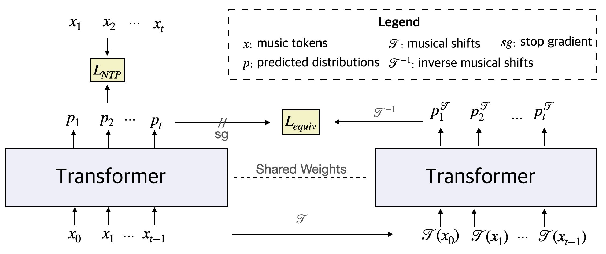

TL;DR — Humans effortlessly recognize a musical passage regardless of whether it is transposed to a different key or shifted in time. Standard music transformers don't: they treat musically-shifted passages as unrelated data, mapping them onto uncorrelated representations in the latent space. The Equivariant Music Transformer (EMT) adds a regularization loss alongside the standard next-token prediction objective, self-distilling itself to model the translational symmetries (equivariance) in music.

EMT architecture. The main branch (left) performs standard next-token prediction, while the auxilary branch (right) aligns the output distribution of musically-shifted inputs with correspondingly shifted version of the original prediction, encouraging equivariant representations.
Uncurated Unconditional Generation Samples
The following samples are randomly selected from EMT's unconditional prompt continuations on the LakhMIDI clean subset. Each sample consists of a 5-second prompt followed by 25 seconds of model-generated continuation.
Prompt region
Sample 1 / 10
EMT (Ours)
Prompt
Generation Robustness Under Shifted Prompts
For each example below, both models are prompted with a 5-second MIDI excerpt. The unshifted condition uses the original prompt, while the shifted condition uses a musically-transformed version (pitch transposition or onset shift). An equivariant model should produce equally coherent continuations regardless of the shift applied to the prompt.
What to listen for:
The smoothness of the transition between the prompt region (blue) and the generated continuation (orange).
The overall musical quality of the generated continuation.
Prompt region
Transition region
Example 1 / 5
Unshifted Prompt
Prompt
Transition
Musically-Shifted Prompt
Prompt
Transition
BibTeX
@inproceedings{guo2026emt,
title = {Equivariant Music Transformer},
author = {Guo, Zixun and Dixon, Simon},
booktitle = {Proceedings of the 27th International Society for Music
Information Retrieval Conference (ISMIR)},
year = {2026}
}